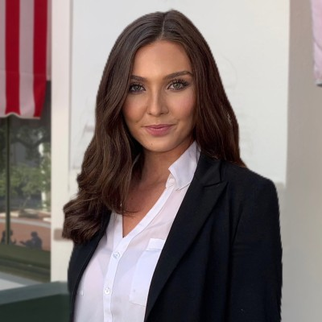

<!DOCTYPE html>
<html lang ="en"></html>
<head>
<meta charset="UTF-8">
<meta http-quiv="X-UA-Compatible" content="IE=edge">
<meta name="viewport" content="width=device-width, inital-scale-1.0">
<title>Jessica Caruso Portfolio</title>
<link rel="stylesheet" href="css/styles.css">
<head>
<header>
  <div class="container">
  <h1>Jessica Caruso's Portfolio</h1>

<nav>
    <a href="#About">About</a>

    <a href="#Portfolio">Portiolio</a>

    <a href="#Contact">Contact</a>
</nav>
</div>
</header>
    <div class="sidenav">
        <a href="images/linkedin.png">
            
          </a>
          <a href="images/soverflow.png">
            
          </a>
          <a href="images/git.png">
            
          </a>
        
      </div>
<main>
<section>
  <body>
<h2>About Me</h2>

<p>My government affairs experience has shaped me into a passionate and motivated team-player! I thoroughly enjoy working in the political process and witnessing a positive impact on local communities. </p> 
<p>This line of work has further motivated me to pursue higher-education and increase my knowledge in mass communications. My goal is to continue to broaden my network and subsequently help as many people as I can. </p>
<body>
<section>
<aside>
<article>
<h2>Places Jessica Lived</h2>
<ul>
    <li>Joliet, IL</li>
    <li>Downs, IL</li>
    <li>Melbourne, FL</li>
    <li>Orlando, FL</li>
    <li>Gainesville, FL</li>
    <li>Tallahassee, FL</li>
    <li>St. Petersburg, FL</li>
</ul>
<aside>

<aside>
<h3>Background Information</h3>
<p>My Bachelor’s degree in Political Science from the University of Central Florida has provided me knowledge in government principles and practices. Additionally, my coursework created a strong foundation in research/analysis, and influenced my professional writing skills. I am grateful to have continued my education at the University of Florida and pursue a Master's Degree in Mass Communications with an emphasis in Political Communications.</p>
<p>Throughout the course of my career, I have created extensive relationships in the Florida Senate, House, Judicial and Executive Branches. I hope to continue building life-long connections and strong ties throughout the entire state of Florida.</p>
<aside>

</article>
</section>
</main>

<footer>
<p> &copy: 
    Jessica Caruso</p>
</footer>
</body>
</html>

